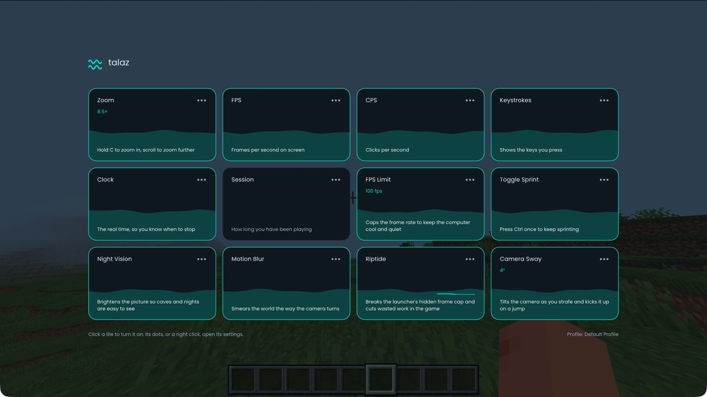
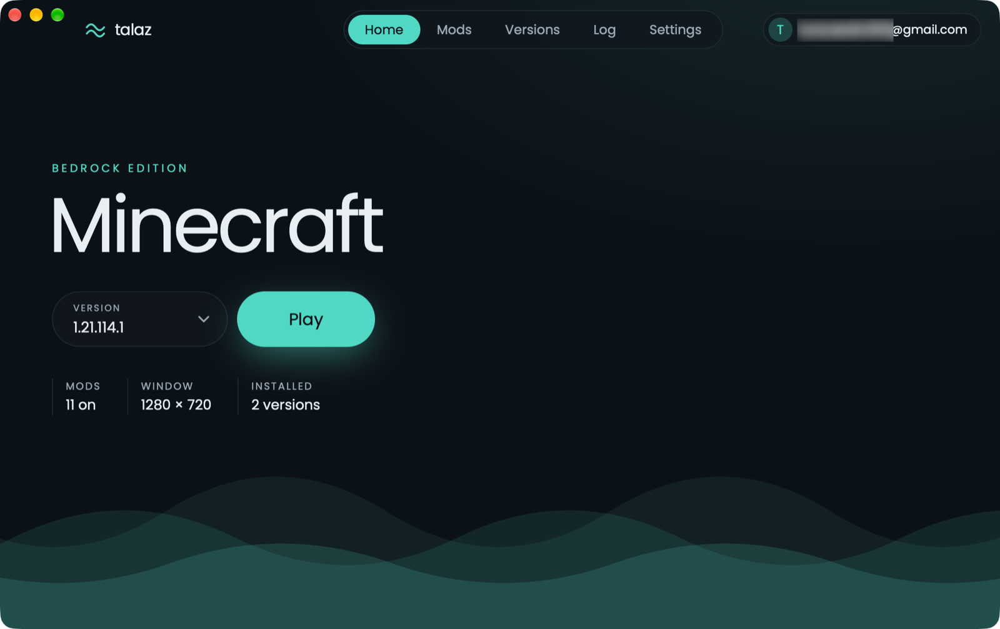

Minecraft Bedrock client
Talaz
Zoom, motion blur, camera sway and movable HUDs for Bedrock, on Windows, Mac and Linux. Free and open source.
Download Talaz
What's in it
ZoomHold C to zoom in, scroll to zoom further.
Motion BlurSmears the world the way the camera turns.
Camera SwayThe camera tilts as you strafe and kicks up when you jump.
Night VisionCaves and nights are easy to see.
HUDsFPS, CPS, keystrokes, a clock and session time, dragged where you want them.
Toggle SprintPress once to sprint and stop holding the key.
